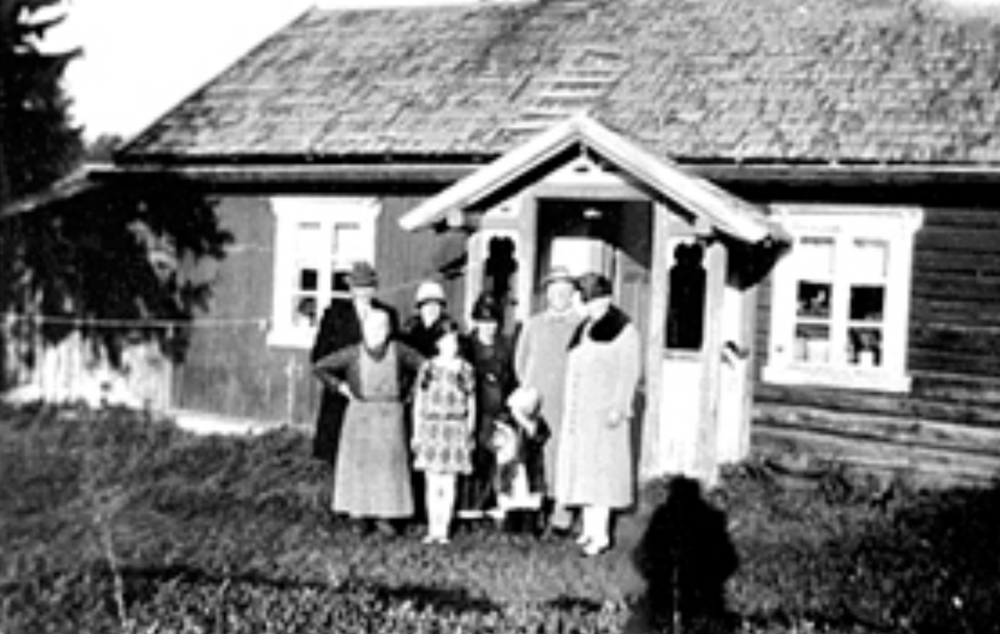

<!DOCTYPE html>

<html>
 <head>
  <title>Tomthagan</title>

  <meta charset="utf-8" />
  <meta name="viewport" content="width=device-width, initial-scale=1.0">
    
  <link rel="stylesheet" href="https://unpkg.com/leaflet@1.7.1/dist/leaflet.css" integrity="sha512-xodZBNTC5n17Xt2atTPuE1HxjVMSvLVW9ocqUKLsCC5CXdbqCmblAshOMAS6/keqq/sMZMZ19scR4PsZChSR7A==" crossorigin=""/>
  <link rel='stylesheet' href="https://cdnjs.cloudflare.com/ajax/libs/leaflet.draw/1.0.4/leaflet.draw.css" />

  <script src="https://unpkg.com/leaflet@1.7.1/dist/leaflet.js" integrity="sha512-XQoYMqMTK8LvdxXYG3nZ448hOEQiglfqkJs1NOQV44cWnUrBc8PkAOcXy20w0vlaXaVUearIOBhiXZ5V3ynxwA==" crossorigin=""></script>
  <script src="https://cdnjs.cloudflare.com/ajax/libs/proj4js/2.6.2/proj4.js"></script>
  <script src="https://cdnjs.cloudflare.com/ajax/libs/proj4leaflet/1.0.2/proj4leaflet.min.js"></script>

  <script src="tomthagan.js"></script>

  <style>
    html, body, #container, #map {
        margin: 0;
        width: 100%;
        height: 100%;
    }
    .leaflet-editing-icon {
        margin-left: -5px !important;
        margin-top: -5px !important;
        width: 10px !important;
        height: 10px !important;
        border-radius: 50%;
    }
    .image-marker {
        border-radius: 2px;
        border: 2px solid #FFF;
        background: #FFF;
        overflow: auto;
        width: 21px !important;
        height: 14px !important;
        overflow: hidden;
    }
    .image-marker > img { width: 100%; }
    .leaflet-popup-content { text-align: center; }
    .leaflet-popup-content h1 { font-size: 16px; }
  </style>
 </head>
 
 <body>
  <div id="container">
   <div id="map"></div>
  </div>

  <script>
    // Map
    var map = new L.Map("map").setView([60.822468, 11.195528], 25);

    new L.control.scale({
        position: 'bottomright',
        imperial: false
    }).addTo(map);

    var featureGroup = L.featureGroup().addTo(map);

    var tilerLayerDefinitions = [
        {
            name: "osm",
            url: "https://{s}.tile.openstreetmap.org/{z}/{x}/{y}.png",
            options: {
                attribution: '&copy; <a href="https://www.openstreetmap.org/copyright">OpenStreetMap</a> contributors',
                maxZoom: 20,
                maxNativeZoom: 19
            }
        },
        {
            name: "mapbox_outdoor-sv9",
            url: "https://api.mapbox.com/styles/v1/mapbox/outdoors-v9/tiles/{z}/{x}/{y}?access_token=pk.eyJ1Ijoic2xla3ZhayIsImEiOiJjaXE4azdndnQwMDQ4aHhrcWZpM25rcDMxIn0.5ObHw68HeWzfLprlb5M5HA",
            options: {
                attribution: '&copy; <a href="https://www.openstreetmap.org/copyright">OpenStreetMap</a> contributors',
                maxZoom: 20,
                maxNativeZoom: 19
            }
        },
        {
            name: "mapbox_dark-v9",
            url: "https://api.mapbox.com/styles/v1/mapbox/dark-v9/tiles/{z}/{x}/{y}?access_token=pk.eyJ1Ijoic2xla3ZhayIsImEiOiJjaXE4azdndnQwMDQ4aHhrcWZpM25rcDMxIn0.5ObHw68HeWzfLprlb5M5HA",
            options: {
                attribution: '&copy; <a href="https://www.openstreetmap.org/copyright">OpenStreetMap</a> contributors',
                maxZoom: 20,
                maxNativeZoom: 19
            }
        },
        {
            name: "1881_atlas",
            url: "https://waapi.webatlas.no/maptiles/tiles/webatlas-1881-vektor/wa_grid/{z}/{x}/{y}.png?APITOKEN=9da664c7-e5b9-4dc7-a093-7ef0f90563c0",
            options: {
                attribution: '&copy; <a href="https://www.openstreetmap.org/copyright">OpenStreetMap</a> contributors',
                maxZoom: 20,
                maxNativeZoom: 20
            }
        },
        {
            name: "1881_orto_2020",
            url: "https://waapi.webatlas.no/maptiles/tiles/webatlas-orto-newup/wa_grid/{z}/{x}/{y}.jpeg?APITOKEN=9da664c7-e5b9-4dc7-a093-7ef0f90563c0",
            options: {
                attribution: '&copy; <a href="https://www.openstreetmap.org/copyright">OpenStreetMap</a> contributors',
                maxZoom: 20,
                maxNativeZoom: 20
            }
        },
        {
            name: "finn",
            url: "https://maptiles.finncdn.no/tileService/1.0.3/normap/{z}/{x}/{y}.png",
            options: {
                attribution: '&copy; <a href="https://www.openstreetmap.org/copyright">OpenStreetMap</a> contributors',
                maxZoom: 20,
                maxNativeZoom: 20
            }
        },
        {
            name: "topo4",
            url: "https://opencache.statkart.no/gatekeeper/gk/gk.open_gmaps?layers=topo4&zoom={z}&x={x}&y={y}",
            options: {
                attribution: '<a href="http://www.kartverket.no/">Kartverket</a>',
                maxZoom: 20,
                maxNativeZoom: 20
            }
        },
        {
            name: "topo4graatone",
            url: "https://opencache.statkart.no/gatekeeper/gk/gk.open_gmaps?layers=topo4graatone&zoom={z}&x={x}&y={y}",
            options: {
                attribution: '<a href="http://www.kartverket.no/">Kartverket</a>',
                maxZoom: 20,
                maxNativeZoom: 20
            }
        }
    ];

    var tileLayers = {};

    tilerLayerDefinitions.forEach(function(layer) {
        let tileLayer = new L.tileLayer(layer.url, layer.options);
        tileLayers[layer.name] = tileLayer;
    });

    tileLayers["osm"].addTo(map);
    
    L.control.layers(tileLayers).addTo(map);

    L.geoJSON(tomthagan, {
        weight: 6,
        opacity: 1,
        color: 'white',
    }).addTo(map);
    L.geoJSON(tomthagan, {
        weight: 3,
        opacity: 1,
        color: 'orange',
        onEachFeature: onEachFeature
    });

    L.marker([60.832001, 11.216133], {
        icon: L.divIcon({
            className: "image-marker",
            html: ''
        })
    })
    .bindPopup('<h1>Tomtstua</h1><p>Husmannsplass under Vestre Tomten, nå Hafsal</p><a target="_blank" href="https://kulturminnesok.no/minne/?queryString=http%3A%2F%2Fkulturminnesok.no%2Ffm%2Ftomstua">Kulturminnesøk</a> | <a target="_blank" href="https://digitaltmuseum.no/011012767736/eksterior-stue-tomstua-foran-til-venstre-mina-nr-2-fra-hoyre-eier-av-tomtstua">Anno museum</a>')
    .addTo(map);

    function onEachFeature(feature, layer) {
        featureGroup.addLayer(layer);
    }

    map.fitBounds(featureGroup.getBounds());
  </script>
 </body>
</html>
